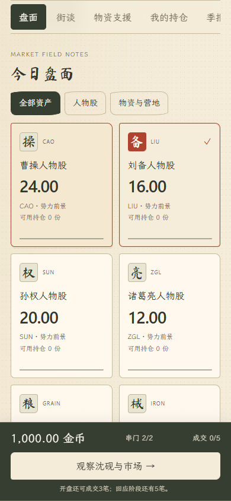

先坐下来，听两句
许掌柜聊粮货，阿衡聊路上的见闻。顺着话头接一句，有时听见线索，有时只是半桌酒话。
风声不等于答案。历史轻策略 / 一局八季的架空春秋
History opens. Your choices follow.
掌柜的话未必准，沈砚也会看走眼。
你可以观望、调仓、囤粮，
也可以把粮草送到你想支持的人手里。
不用注册，也不用先填 Key。打开就能玩完整八季。

只有开局参考历史。后来的市场和战局，在这一局里逐季发生。
许掌柜聊粮货，阿衡聊路上的见闻。顺着话头接一句，有时听见线索，有时只是半桌酒话。
风声不等于答案。买入、加仓、减仓，或什么都不做。人物股之外，粮草、军械、战马和营地也能独立经营。
先看支出，再确认下单。把物资分给一个或多个势力。真正交付后，它们会影响补给与军力，改变战局机会和下一季价格。
支援有影响，胜负无保证。规则和结算在本地运行。模型负责说话和受限的交易判断，不能随口改掉这一季的胜负。
到授权页确认额度与有效期，把一次性 Code 带回游戏，连接专用 Key。
用自己的兼容接口，或让有权限的 Agent 按游戏内说明配置。不需要注册 TokenPay。
默认只在页面内存保存 Key，可自行选择浏览器记忆。模型请求使用你自己的服务额度；关闭连接仍可继续玩。浏览器和 APK 的接口均需支持 HTTPS 与跨域。
开局参考207年局势，之后是规则驱动的架空演化。支援能改变机会，但没有必胜选项；模型不担任裁判。
金币是游戏内数字，没有真钱交易和提现。模型额度来自你自己选择的服务商，只有主动开启并发送聊天、观察或测试时才发起模型请求。
各自保存在当前浏览器或安卓应用里，不自动同步。可在规则面板导出世界存档，再在另一端导入。导出内容不包含模型 Key；清除应用数据或卸载前请备份。
点击下载 APK，通过 GitHub Release 获取安装包；在安卓文件管理器里打开。按系统提示允许该来源安装，然后打开“千秋交易所”。若页面显示异常，请先更新系统 Android System WebView。更新时直接覆盖安装；不要先卸载，以免丢失未备份进度。
可以。代码采用 MIT，原创示例文本采用 CC BY-SA 4.0，字体遵循各自 OFL 许可。源码、构建说明和测试记录都在游戏仓库。